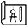

Overslaan en naar de inhoud gaan
Home
Sitemap
Contact
Gemeente Velsen
Zoekveld
Zoeken
Zoeken
Menu
Burger
Burger
Belastingen en heffingen
Geboorte, huwelijk en overlijden
Jeugd en onderwijs
Natuur en milieu
Meepraten in Velsen
Openbare orde en veiligheid
Identificatie, rijbewijs en uittreksel
Subsidies
Verkeer en vervoer
Waterloket
Werk en Inkomen
Wonen en (ver)bouwen
Zorg en welzijn
Ondernemer
Ondernemer
Alle producten Ondernemersloket
Starters
Vestigen en uitbreiden
Markten en standplaatsen
Subsidies en financiën
Beleid voor ondernemers
Informatie en statistiek
Duurzaamheid en innovatie
Inkoop en aanbesteding
Belastingen en heffingen
Vergunningen
Vrije tijd
Vrije tijd
Zien en doen
Cultuur
Sport
IJmuiden Rauw aan Zee
Evenementen (website VVV)
Spaarnwoude (website)
Stranden (website VVV)
Website VVV
Actueel
Actueel
Actueel nieuws
Besluiten en vergunningen
Besluitenlijst B&W
Bestemmingsplannen
Bekendmakingen
Evenementen (website VVV)
Gemeentegids
Infopagina
Inspraakonderwerpen
Inzage (ontwerp)besluiten
Projecten
Vacatures
Velsen in Cijfers (website incijfers)
Werk in uitvoering (website Projectenkaart)
Bestuur & organisatie
Bestuur & organisatie
Gemeenteraad
College van B&W
Organisatie
Lees voor
Meest aangevraagd
Belastingen
Afspraak maken
Trouwen of geregistreerd partnerschap
Melding Openbare Ruimte
Verhuizing
Werk in uitvoering
Identificatie, rijbewijs en uittreksel
Paspoort
ID-kaart
Rijbewijs
Reizen met kinderen
Aangifte geboorte
VOG (Verklaring Omtrent Gedrag)
Bouwen, wonen en verkeer
WOZ-loket

Bouwtekening
Omgevingsvergunning
Kapvergunning
Dakkapel (flitsvergunning)
Bestemmingsplannen
Afval
Afvalkalender
Meldpunt grofvuil
Afvalbrengstation
Alles over afval
Kliko / minicontainer kwijt of vervangen
Afval niet opgehaald
Vrije tijd
Ponttijden
Evenement organiseren
Toerisme
Sport
Wandel- en fietsroutes
Zien en doen
Wij gebruiken cookies om onze dienstverlening te verbeteren
Door op een link te klikken accepteert u de cookies
Ok, ik ga akkoord
Ik wil graag meer informatie